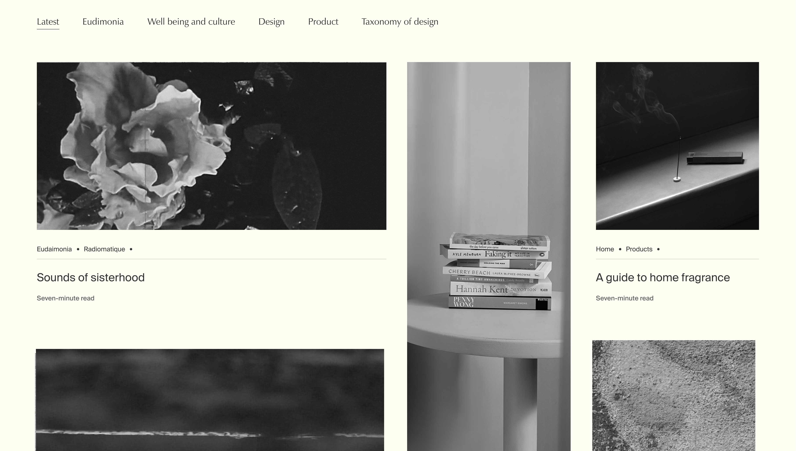
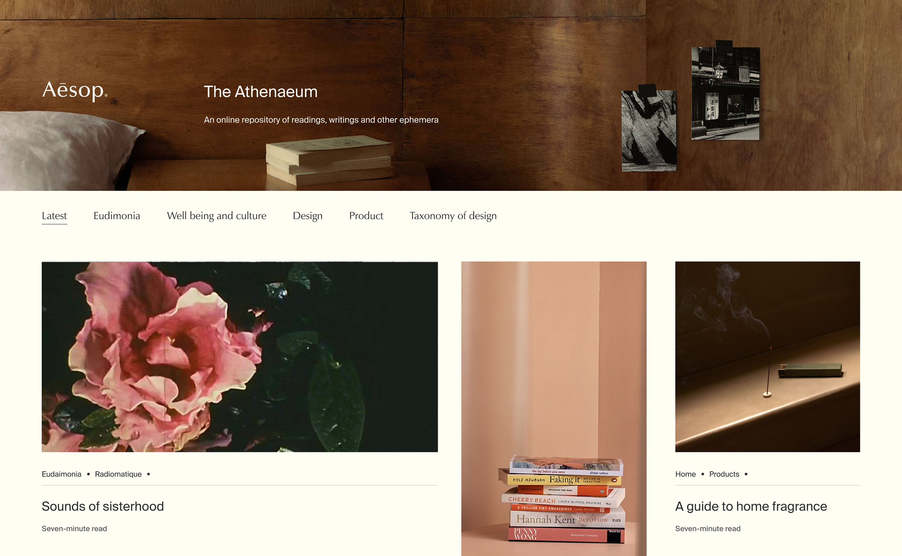
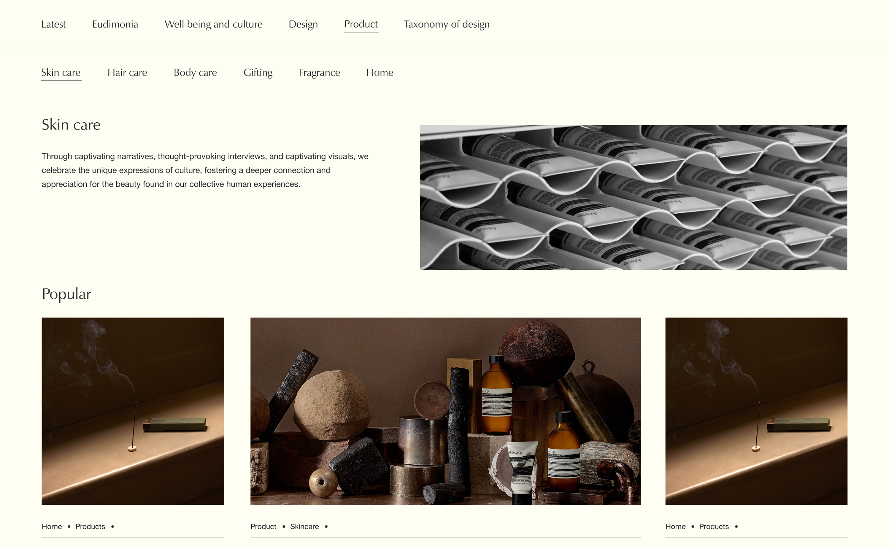
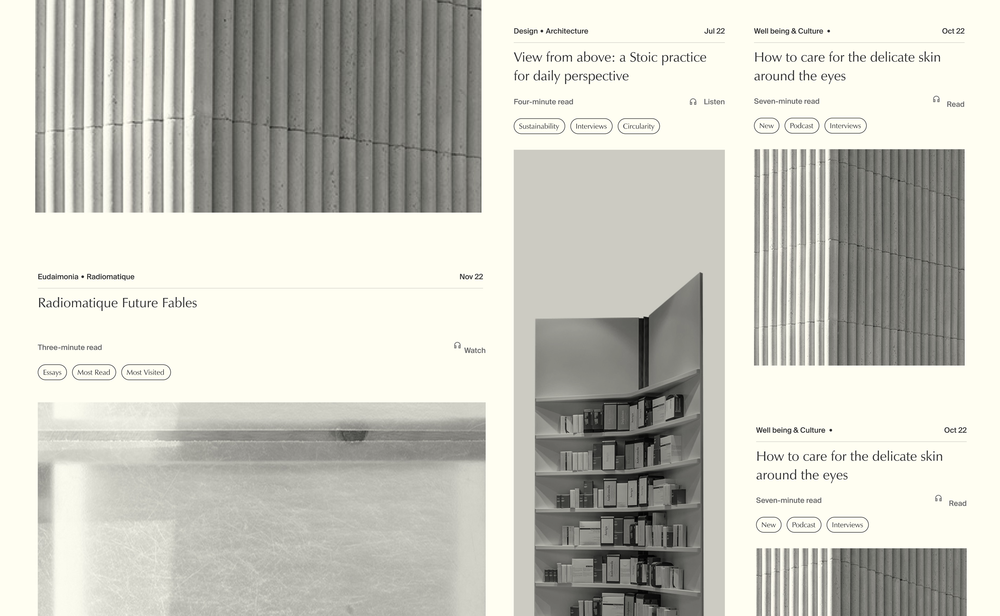

The Athenaeum + Taxonomy of Design
Aesop

The Athenaeum was Aesop's home for the writing that sat alongside the products — interviews, essays, reflections on culture, community and identity. It had years of good content in it and almost no way to find any of it.

Problem
Articles were stacked in chronological order. New pieces pushed older ones down a single infinite scroll. No categories, no filters, no search affordance. If you remembered reading something six months ago, you weren't getting back to it.
We ran workshops across marketing, SEO, production and design. Two themes came up repeatedly.
Wayfinding was broken. The page was deliberately quiet, but the quietness hid the structure underneath — readers couldn't tell what was in the archive or how it was organised.
The Athenaeum was siloed from the rest of Aesop's digital experience, even though it was meant to deepen it.
Solution
We agreed to treat the Athenaeum as a library rather than a feed. Four content pillars: Product, Literature & Culture, Wellbeing, Stores & Architecture.
Mapped to the annual content calendar the Digital Team already worked from. Editors planned in those categories; the site would now reflect that.
Literature and culture
Products and guides
Architecture and design
Wellbeing

Midway through the project, the brief expanded: the Taxonomy of Design — Aesop's earlier design archive, on its own domain, with a strong internal following — was being folded into the Athenaeum. The agency wireframes didn't account for it, and the Taxonomy's distinctive grid had nowhere to land in the new structure.
The question I took into high-fidelity: how do we bring the Taxonomy's grid into the Athenaeum without losing what made it recognisable?

Delivery 01
A twelve-column grid with 50px gutters and 80px margins, taken in proportion from the Taxonomy of Design so its visual logic carried over.
Article card components in four aspect ratios, so editors could compose varied layouts instead of repeating one template. Sans-serif headings for legibility against image-heavy pages.
Delivery 02
A landing page where save and share controls and full-colour imagery appeared on hover, keeping the default view calm. Category pages plus a sticky top navigation with subcategories on hover, so the four pillars were always one click away.